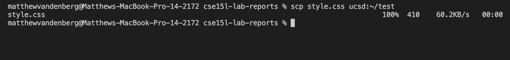
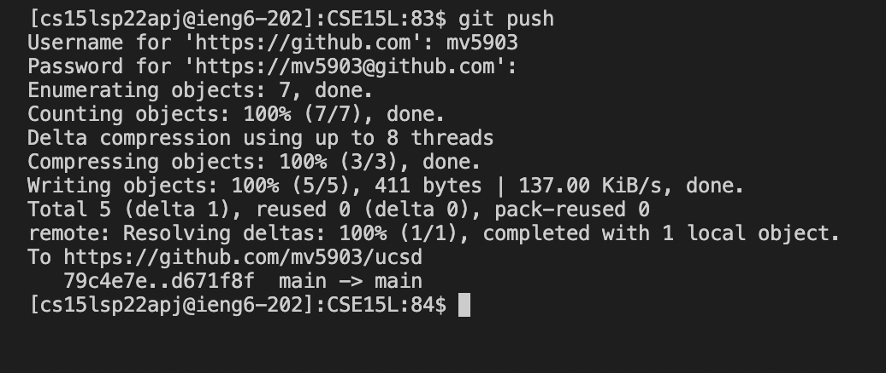
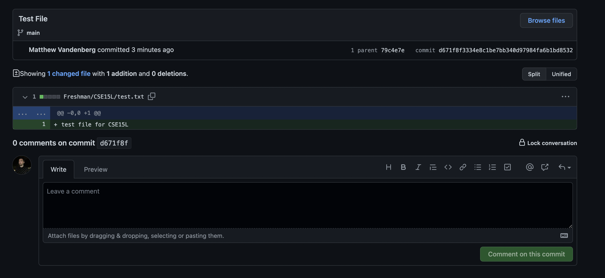
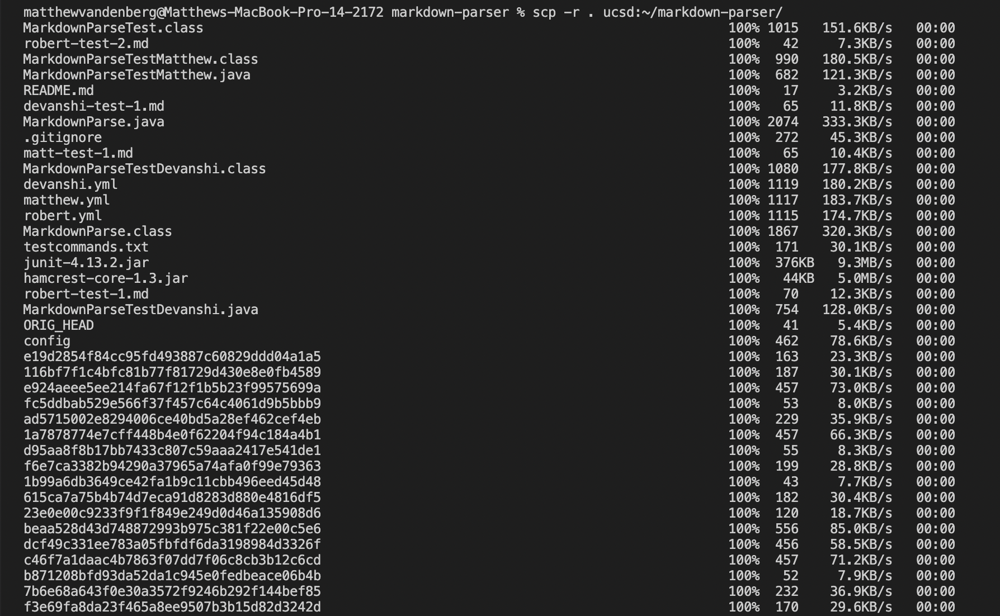
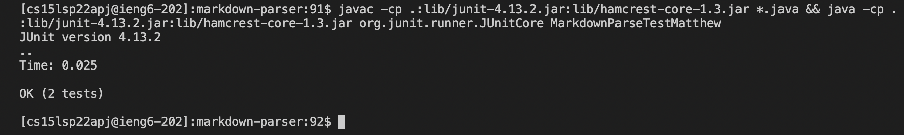
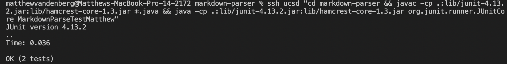

Here is where my ssh keys are located:

In order to create my ssh profile file, I simply typed the command nano ~/.ssh/config, and I pasted in the required code. I then renamed the hostname to ucsd instead of ieng6, which leaves the following:
By simply creating this file and saving it in the proper directory, we can easily log in to the ieng6 server by typing ssh ucsd. Recall that I used ucsd as the host name, rather than ieng6.
When we created an ssh host on our computer, we can more quickly move a file from our computer to the ucsd server. For example:
Here is where my ssh keys are located:
Private key location on ucsd machine:
Pushing from UCSD machine:
GitHub page showing the commit:
scp -rCopying the markdown-parse directory over to the ucsd machine can be done as follows. Note that there was a lot of files, but the task does complete successfully (too much to show in screenshots):
Running the JUnit tests on the ucsd machine can be done by running the same commands, but on the ucsd machine instead of our own:
We can combine many of these commands to make running JUnit Tests much easier:
